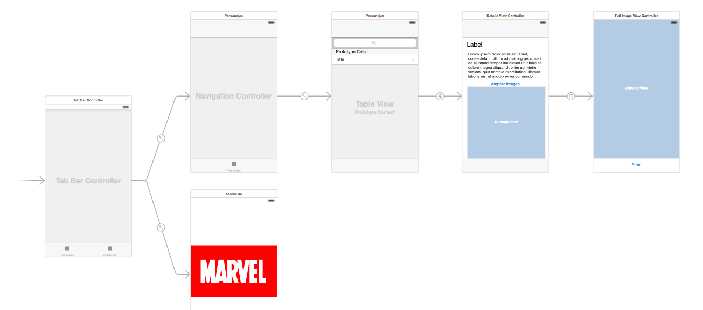
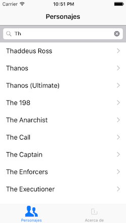

Este "miniproyecto" trata de hacer una pequeña aplicación basándose en el API de la editorial Marvel, que nos permite consultar información sobre los personajes, los comics, las series,...
Lo primero que necesitas es registrarte en Marvel para poder obtener un par de claves. Este paso es necesario porque la API tiene un número máximo de llamadas diario, lo que significa que no podemos compartir todos las mismas claves.
La API de Marvel es REST, por lo que acepta peticiones HTTP. No obstante hacerlas directamente con los APIs de iOS sería un poco engorroso, por lo que usaremos una librería en Obj-C de terceros llamada Marvelous para hacer las peticiones más simples y sobre todo recibir los datos ya parseados.
Por desgracia Xcode no integra ningún sistema de gestión de dependencias de librerías de terceros, así que acudiremos a una herramienta que no es de Apple pero que se ha convertido en un estándar de facto en el mundo iOS: CocoaPods.
Cocoapods es a la vez un repositorio de librerías y un gestor de dependencias para instalar automáticamente estas librerías en nuestros proyectos. Hay muchas librerías de terceros disponibles con este sistema, puedes buscarlas desde la página de CocoaPods.
Para instalar cocoapods, desde la terminal hacer
sudo gem install cocoapodsEsto instala la herramienta desde un repositorio de Internet, así que necesitarás conectividad...y paciencia, según vaya la red.
Si todo va bien se instalará un comando llamado pod. Ejecútalo desde la terminal para comprobar al menos que existe. Ahora debes seguir estos pasos:
MarvelPodfile en el directorio del proyecto (el que contiene el fichero .xcodeproj). Este archivo debe contener la configuración y las dependencias (o pods) del proyectoplatform :ios, '9.0'
pod 'Marvelous'Podfile y desde él ejecuta el comando pod install. Las dependencias de nuestro proyecto se bajarán automáticamente y se creará en el directorio actual un Marvel.xcworkspaceMarvel.xcodeproj).Pods, que contiene las dependencias.MarvelousPara poder hacer llamadas al API de Marvel necesitas un par de claves. Las puedes ver, una vez dado de alta y autentificado en Marvel, en
https://developer.marvel.com/account
Para probar de manera sencilla la librería Marvelous puedes poner este import en el AppDelegate.m
#import <Marvelous/Marvelous.h>Y ahora colocar el siguiente código en el application:didFinishLaunchingWithOptions y comprobar que se muestran todos los personajes cuyo nombre comienza por "spider".
RCMarvelAPI *marvelAPI = [RCMarvelAPI api];
//CAMBIA ESTO PARA PONER TUS CLAVES!!!!!!
marvelAPI.publicKey = @"tu-clave-publica-del-api";
marvelAPI.privateKey = @"tu-clave-privada-del-api";
RCCharacterFilter *filtro = [[RCCharacterFilter alloc] init];
filtro.nameStartsWith = @"spider";
[marvelAPI charactersByFilter:filtro
andCallbackBlock:^(NSArray *resultados, RCQueryInfoObject *info, NSError *error) {
for (RCCharacterObject *personaje in resultados) {
NSLog(@"%@", personaje.name);
}
}
];Para que te hagas una idea de la estructura, se muestra el storyboard de la aplicación ya terminada

La aplicación debe permiti buscar, listar y mostrar los detalles de alguno de los recursos que ofrece el API. Elige tú lo que prefieras: personajes, comics, creadores...
Puedes comenzar creando un tab bar a partir de la pantalla inicial: selecciónala y en el menú Editor elige Embed In > Tab Bar Controller.
Esta debe ser una pantalla con una barra de búsqueda y una vista de tabla en la que se puede buscar y listar el recurso elegido (por ejemplo personajes). El resultado final será algo como:

Ve a la primera (y por el momento única) pantalla de contenido del tab bar, selecciona la barra inferior y en las propiedades bar item ponle un título apropiado (por ejemplo "Personajes") y un icono relevante.
Recuerda que tienes unas cuantas webs de donde puedes coger iconos "planos", por ejemplo https://www.iconfinder.com/iconsets/ios-7-icons o http://www.flaticon.com/packs/line-icon-set
La tabla:
Prototype cells a 1.style el valor Basic, para usar uno de los tipos predefinidos de celda y no tener que hacerlo tú.La barra de búsqueda:
Nos falta fijar el autolayout:
Cmd e inserta ambas en un stack view utilizando el primero de los botones de autolayout (parte inferior derecha del *storyboard)Una vez hecho esto puedes poner en marcha la app para ver si la interfaz tiene buen aspecto. La tabla aparecerá vacía, por supuesto.
El objeto que actúe como delegate de la barra de búsqueda debe implementar el protocolo UISearchBarDelegate. Puede ser cualquiera, aunque siguiendo la filosofía MVC (Monster View Controller) haremos que sea el view controller de la pantalla actual :).
Vamos a crear este view controller:
ListaViewController y haz que sea una subclase de UIViewControlleridentity inspector.Ahora vamos a conectar el view controller con la barra de búsqueda:
connections inspector conecta el outlet delegate con el controller de esta pantalla.ListaViewController.h que esta clase implementa el protocolo UISearchBarDelegateListaViewController.m implementa el método searchBarSearchButtonClicked:, que se llamará cuando se escriba algo en la barra y se pulse el botón de "buscar". Para probar inicialmente basta que imprimas en la consola el texto escrito en la barra y quites el teclado on screen.- (void)searchBarSearchButtonClicked:(UISearchBar *)searchBar {
NSLog(@"%@", searchBar.text);
//Esconde el teclado "en pantalla"
[searchBar resignFirstResponder];
}Ejecuta la app y comprueba que efectivamente funciona.
Ahora tendrás que poner código propio para que cuando se pulse en el botón de buscar se haga la llamada a la API de Marvel. Por el momento lo más simple es mostrar los resultados con NSLog. Puedes asignárselos también a un NSArray que sea una @property del controller, para que luego sean sencillos de mostrar en la tabla.
Una vez conseguido esto, tendrás que hacer que los resultados aparezcan en la tabla. Recuerda que necesitas un datasource para ella, y que para simplificar puedes hacer que sea el ListaViewController. A grandes rasgos esto implica:
@property.connections inspector el outlet datasource con el controller.ListaViewController debe implementar el protocolo UITableViewDataSource. Hay que poner en el .h que esto es así, y además implementar los correspondientes métodos en el .m, para devolver el número de filas en la tabla y devolver una celda dado su indexPath.Cada vez que se haga una búsqueda tendrás que decirle a iOS que vuelva a redibujar la tabla llamando a su método reloadData. Cuidado, porque al ser una actualización de la interfaz debes asegurarte de que esto lo estás haciendo desde el thread principal, algo como:
//sustituye self.vistaTabla por el outlet que hayas definido
//para acceder a la tabla desde el controlador
[[NSOperationQueue mainQueue] addOperationWithBlock:^{
[self.vistaTabla reloadData];
}];Obtener el
mainQueueexplícitamente es necesario si, como es lo más lógico, colocas el código anterior en el bloque que obtiene la respuesta del API de Marvel. Recuerda que para evitar bloqueos, Marvelous funciona de modo asíncrono y devuelve los resultados ejecutando un bloque que tú le pasas.
Una vez terminado todo esto, esta pantalla debería ser casi totalmente funcional. Solo quedaría ver los detalles de cada item al hacer tap sobre él.
Opcionalmente (0,25 puntos extra), puedes hacer que aparezca un spinner mientras se está procesando la petición, para que el usuario sepa que el sistema está esperando datos. Los spinners en iOS se denominan Activity Indicators. Puedes consultar la referencia de la clase UIActivityIndicator para ver la forma de uso, aunque es muy sencillo, básicamente debes hacer startAnimating para que empiece a girar y stopAnimating para pararlo.
Es posible que el activity indicator se te quede detrás de los otros elementos de interfaz y no se vea. Puedes usar el método
bringSubviewToFrontque se llama desde la vista "madre" para pasar a una vista "hija" a "primer plano". Si estamos en el controller sería algo como[self.view bringSubviewToFront:self.miActivityIndicator], ya que recuerda queself.viewen un controller es la vista principal. Tendrás que sustituir la referenciaself.miActivityIndicatorpor la apropiada en tu caso. Además de esto lleva cuidado también con el color, otro problema típico es usar uno del mismo color que el fondo.
La nueva pantalla mostrará los datos de un item al hacer tap. Como una vez en los detalles queremos poder volver atrás al listado de forma sencilla, lo mejor es usar un navigation controller:
En este apartado todavía no estamos implementando la vista de detalle, solo creando la jerarquía de navegación.
Editor > Embed In > Navigation Controller. Aparecerá un nuevo navigation controller que tiene como primer nivel de navegación a la pantalla de lista de items.Update Frames del autolayout.title el recurso que estás mostrando (personajes, autores, comics,...).Esta sería la que muestra todos los datos de un personaje, comic, creador,... junto a su imagen si es que la tiene.
Si quieres usar una tabla estática para diseñar esta pantalla debes usar como controller una clase que herede de
UITableViewController
ctrl+arrastrar entre la celda prototipo y la pantalla actual. Elige el tipo adecuado de segue.DetalleViewController que herede de UIViewController y asóciala a esta pantalla..h del DetalleViewController una @property del tipo de recurso que estés mostrando (RCCharacterObject, RCComicsObject, RCCreatorObject,...)prepareForSegue de la pantalla de lista instancia esta @property para que contenga el objeto a mostrar. Para saber qué fila de la tabla se ha seleccionado puedes seleccionar el método del objeto tabla llamado indexPathForSelectedRow, que devuelve el indexPath de la fila seleccionada. La propiedad row de este index path es el número de fila.Fijate que la
@propertyno puede ser privada porque en ese caso no sería accesible desde el controller de lista
viewDidLoad del controller. Consulta el .h de la clase elegida, o la documentación del API de Marvelous para saber qué propiedades tiene cada objeto.NSOperationQueue *queue = [[NSOperationQueue alloc] init];
[queue addOperationWithBlock:^{
//sustituye self.personaje por el objeto que quieres mostrar
//Un RCImageObject no es la imagen en sí, sino los datos de su URL
RCImageObject *thumb = self.personaje.thumbnail;
NSString *url = [NSString stringWithFormat:@"%@/portrait_uncanny.%@",
thumb.basePath, thumb.extension];
//Cambiamos el http: por https:, no se pueden hacer peticiones a URLs no seguras
NSString *url_https = [url stringByReplacingOccurrencesOfString:@"http:" withString:@"https:"];
NSData * data = [[NSData alloc] initWithContentsOfURL: [NSURL URLWithString: url_https]];
if (data) {
UIImage *img = [[UIImage alloc] initWithData:data];
[[NSOperationQueue mainQueue] addOperationWithBlock:^{
//sustituye self.miImagen por el outlet para acceder a la imagen
self.miImagen.image = img;
}];
}
}];
Puedes consultar esta página para ver el formato de las URL de las imágenes. Básicamente se construyen con una trayectoria base seguidas de un "modificador" de aspecto y tamaño (portrait_small, landscape_medium, ...) y la extensión del archivo.
En el código anterior se obtiene la URL de la imagen y luego se cambia el
http:porhttps:. Como ya hemos visto en otras sesiones, en principio en iOS9 una app no puede hacer una petición a una URL web si no es conhttps:. Esto debería cambiarse en la propia libreríaMarvelous, pero podemos salir del paso con este pequeño parche.
Implementa una nueva pantalla en la que se pueda ver solo la imagen a mayor tamaño. Haz que la transición se realice con un segue modal pulsando sobre algún botón "ver imagen ampliada" (si tienes activadas las size classes el tipo equivalente es present modally).
En el API de Marvel, la URL de la imagen a tamaño completo se consigue simplemente concatenando las propiedades basePath y extension, de modo que sería prácticamente igual al código para cargar la imagen en la pantalla anterior pero sin poner el "modificador" (en el ejemplo era portrait-uncanny).
Para volver atrás en este tipo de segue necesitas hacerlo manualmente. Recuerda que lo hicimos así en la aplicación de "Pioneras".
Esta es la segunda de las pantallas del tab bar. Simplemente debe consistir en una imagen estática y un text view con información sobre la aplicación.